Diseño sostenible
Creamos huertos ecológicos, funcionales y adaptados a cada espacio, incorporando reutilización y materiales reciclados.
Germinando integra naturopatía, herbolaria, huertos medicinales y educación ambiental para crear experiencias que conectan a personas y comunidades con los saberes de la tierra.
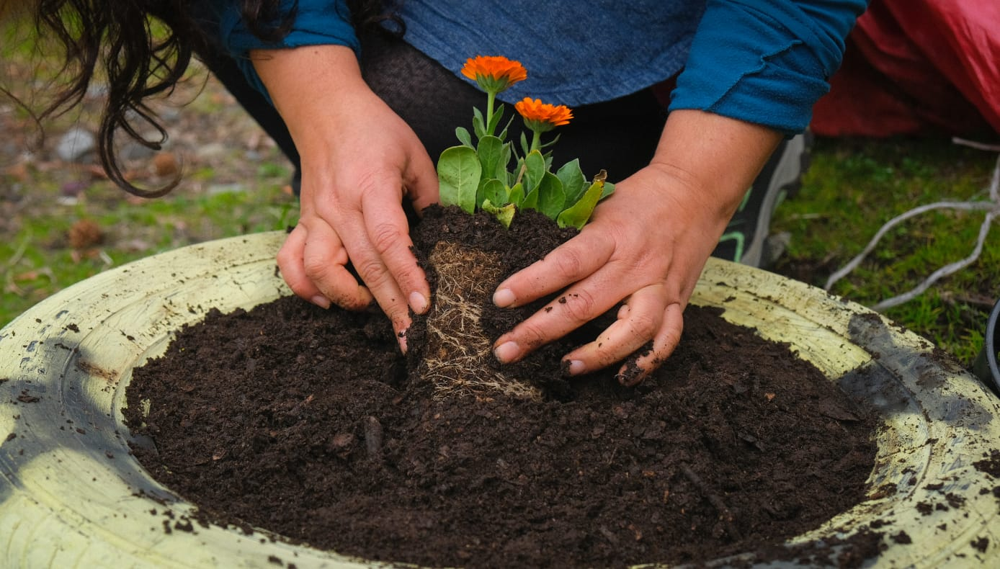
Sembrar · cuidar · compartir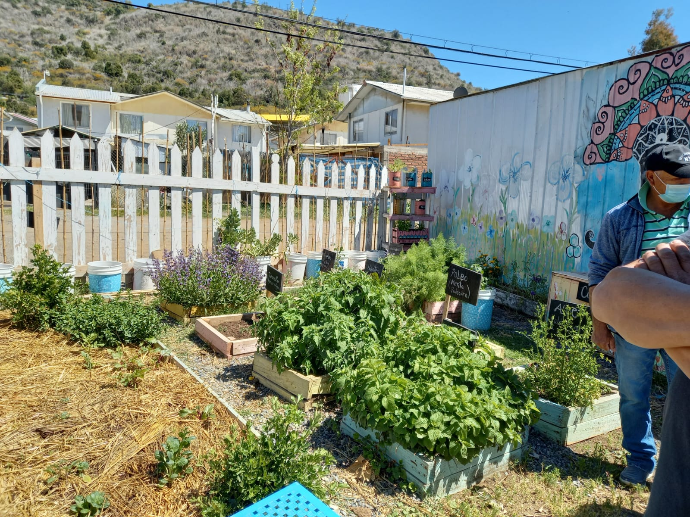
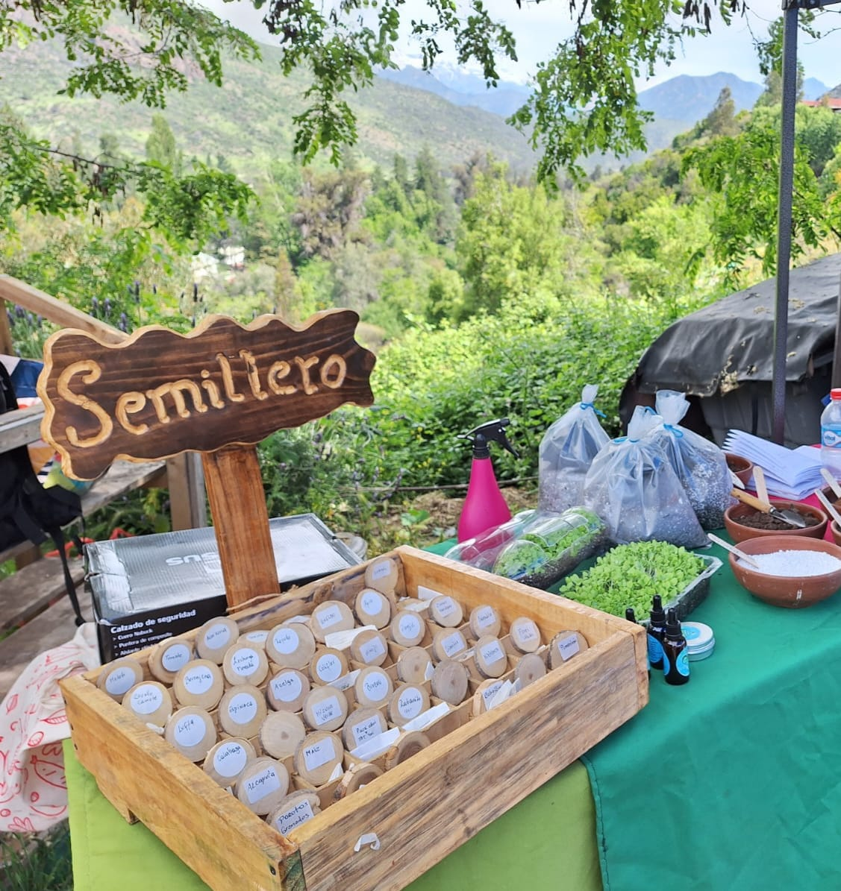
Saberes que vuelven a la tierraGerminando nace como un espacio dedicado a acercar los saberes de las plantas medicinales, los huertos y el autocuidado natural a personas y comunidades.
Integramos naturopatía, herbolaria, educación ambiental, diseño de huertos y elaboración artesanal de productos naturales.
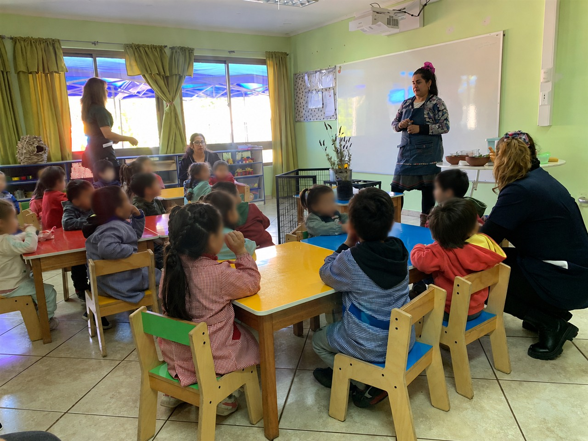
Saberes vivos que se compartenMi vínculo con las plantas medicinales nace desde un saber ancestral transmitido a través de mi linaje, una memoria viva que hoy honro y comparto con respeto y conciencia.
Trabajo en comunidad a través de huertos, talleres y medicina natural, entendiendo la salud como un equilibrio entre la tierra, el cuerpo y las emociones.
Técnico en VitiviniculturaINACAP
Naturopatía — CETELAcreditada por MINSAL
Diseño de huertosEspacios reducidos y reciclaje avanzado
Cada proyecto une conocimiento práctico, cuidado de la naturaleza y experiencias pensadas para las personas.
Creamos huertos ecológicos, funcionales y adaptados a cada espacio, incorporando reutilización y materiales reciclados.
Creamos experiencias para colegios, jardines infantiles, personas mayores, organizaciones, instituciones y comunidades.
Compartimos conocimientos de herbolaria, plantas medicinales y elaboración de preparados orientados al bienestar y autocuidado.
Experiencias donde el conocimiento se transforma en algo que puedes tocar, crear y llevar contigo.
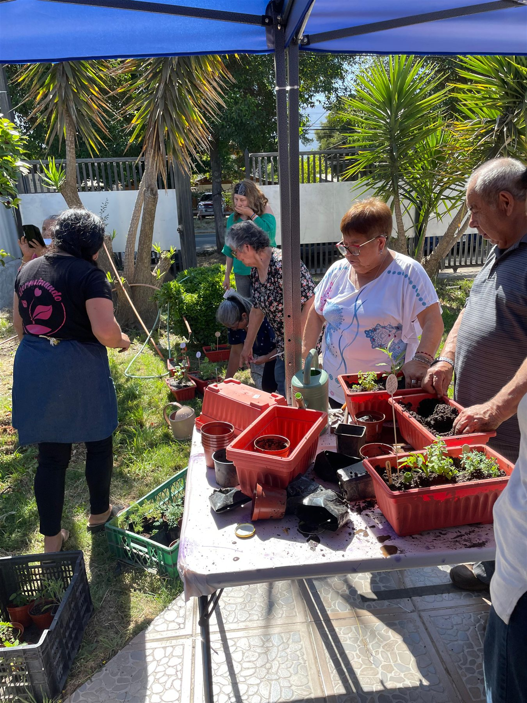
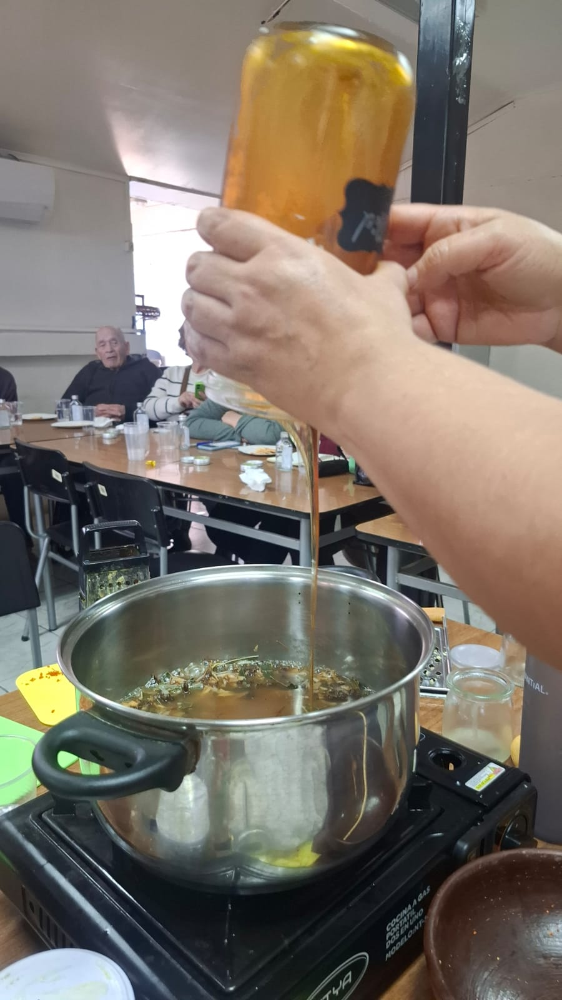
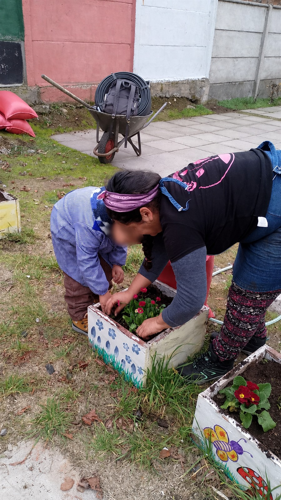
Muchos de nuestros talleres finalizan con la elaboración de un producto o preparación que cada participante puede llevar consigo.
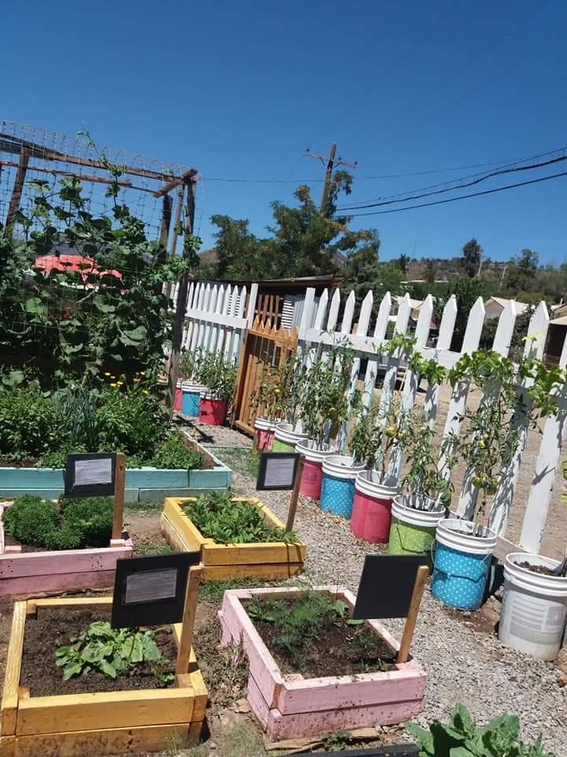
Diseñamos e implementamos espacios adaptados a personas, comunidades e instituciones, integrando cultivo, reutilización, educación y biodiversidad.
Huerto alimenticio-medicinal desarrollado incorporando materiales reciclados.
Huerto alimenticio-medicinal integrando reutilización y expresión artística.
Experiencia de cultivo y aprendizaje orientada a obtener productos medicinales desde el propio huerto.
Talleres de herbolaria para acercar el conocimiento de las plantas a la comunidad educativa.
Huerto medicinal y talleres de herbolaria trabajando el proceso desde la semilla hasta la medicina.
Trabajamos con distintas generaciones creando espacios donde aprender, compartir y volver a relacionarnos con la tierra.
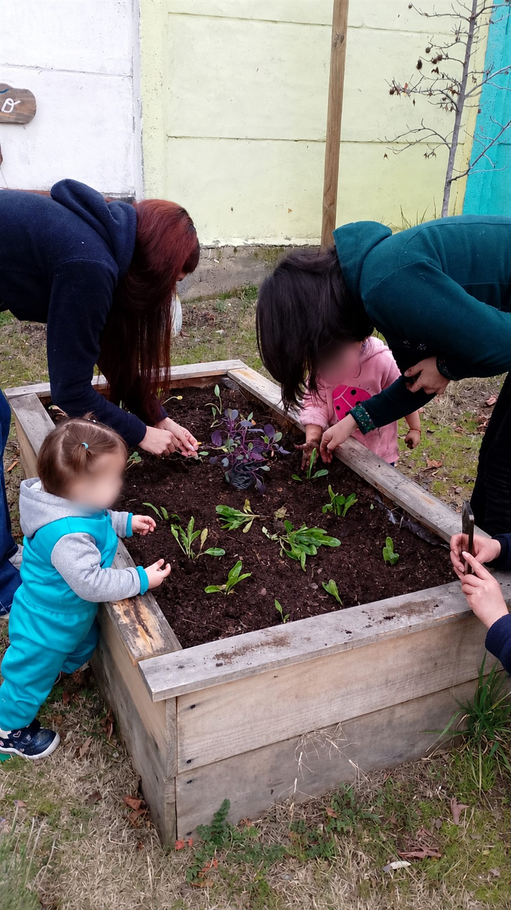
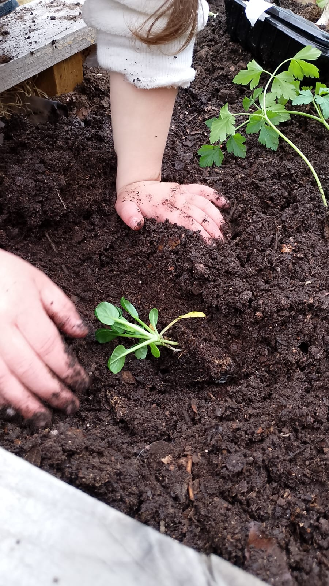
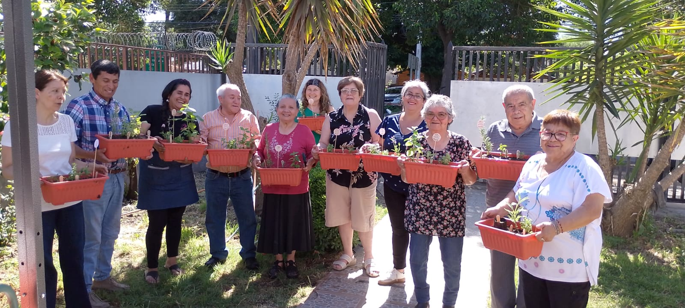
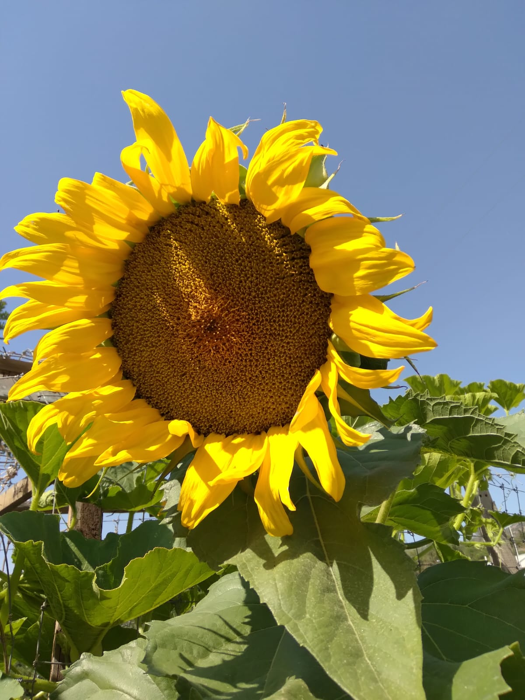
Preparados naturales desarrollados con plantas e ingredientes seleccionados, elaborados de manera artesanal y con especial cuidado en cada proceso.
Consultar productos →Extractos herbales elaborados con respeto por los tiempos de cada planta.
Preparados artesanales para acompañar el bienestar cotidiano.
Aromas naturales que invitan a volver al presente.
Formulaciones sencillas y cuidadas, inspiradas en los saberes de la herbolaria.
Diseñamos talleres, programas educativos, huertos y experiencias adaptadas a los objetivos y características de cada comunidad.
Conversemos sobre talleres, huertos, productos o proyectos para tu comunidad.